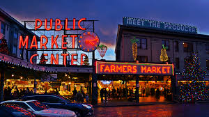
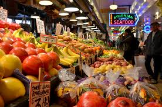

Whatever Your Interest, There's Always Something To Do in the City!
Looking for something to do in the Seattle area? Never fear, there are hundreds of activities to keep every member of your family entertained and you can browse through some of the most popular area events and activities on this site.
Visit Seattle's original farmers market, Pike's Place Market.

Attend a seasonal cooking demo, hands-on cooking class or pop-up event in the heart of Pike Place Market. Plan your visit here.
